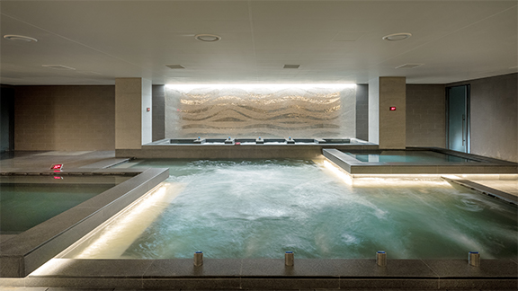

씨메르의 다양한 스파 시설과 고객 이용 편의를 고려한 부대시설을 소개합니다.



- SAUNA
-
고급스러운 인테리어로 디자인된 사우나는 샤워부스와 다양한 이벤트 탕, 바데시설 등이 마련되어 있습니다.
건식 및 습식 사우나는 물론, 세신실까지 갖추어져 있어 씨메르를 방문하는 고객 여러분들에게 편안한 휴식을 제공하며 매달 남녀 대욕장을 교환하여 음양의 조화를 통해 양성의 기를 보충할 수 있도록 운영합니다.
- 운영 안내
-
- 24시간 운영되는 시설입니다.
- 단, 매달 마지막주 일요일 사우나 남/녀 욕장 교체(0시-5시)시 전체 시설은 휴게합니다.
- Sauna 안내사항
-
- 어린이와 노약자는 반드시 보호자와 동행하여야 합니다.
- 어린이가 탕내에서 장난을 치는 등 다른 고객에게 피해를 주지 않도록 주의 부탁드립니다.
- 식 후 30분 이내에는 탕에 들어가지 마십시오.
- 음주자, 눈병, 피부질환, 전염병이 있으신 분들과 심장병, 임산부, 노약자, 고혈압, 당뇨가 있으신 분들은 이용을 삼가주시기 바랍니다.